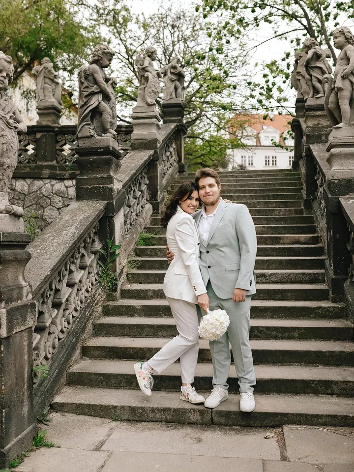
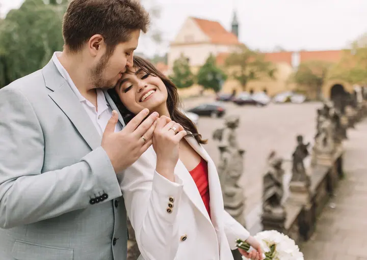

jedna
Svatební focení
Jemné fotky z vašeho dne, ke kterým se budete vracet ještě dlouhé roky. Ráda vás fotím i před svatbou.

Svatební a rodinná fotografka v Praze · Praha

Jmenuji se Natalia Fedori a fotím v Praze svatby, zamilované páry i rodiny. Focení se mnou je klidná procházka městem, při které žijete chvílí a já zachycuji, co se mezi vámi děje.
Více o mně
Co fotím
jedna
Jemné fotky z vašeho dne, ke kterým se budete vracet ještě dlouhé roky. Ráda vás fotím i před svatbou.
dvě
Klidná procházka městem, při které si užíváte chvíli spolu a já zachycuji, co se mezi vámi děje. Pózovat umět nemusíte.
tři
Doma, venku, v kavárně nebo v ateliéru. Na místě tolik nezáleží, hlavní je, že jste spolu.
Upřímné fotky jen o vás. Udělejte si čas sami pro sebe.

Stačí být spolu, zbytek nechte na mně


Za objektivem
Fotím tak, abyste mohli být sami sebou. Bez napětí, bez aranžování a bez přemýšlení, jak se správně postavit. Záleží mi na tom, abyste se před objektivem cítili klidně a na fotkách se poznali.
Většina lidí, které fotím, mi na začátku řekne, že se před foťákem cítí nesví. To je úplně normální. Během focení vás jemně vedu, abyste se mohli uvolnit a nemuseli myslet na to, jak vypadáte. Výsledkem jsou živé fotky bez strojených póz.
Moje focení je pro vás, pokud nemáte rádi pózování, chcete živé fotky místo dokonalých póz a záleží vám na atmosféře a klidu. Ráda vám pomohu s nápadem i s výběrem místa v Praze.
Natalia
Řekněte mi něco o sobě a o tom, jaké focení si představujete: rodinné, párové, individuální nebo svatební.
V klidu spolu probereme nápad i náladu, doporučím vhodné místo v Praze a vybereme termín, který vám vyhovuje.
Na pózy myslet nemusíte. Procházíme se, vy si užíváte chvíli a já vás jemně vedu.
Po focení dostanete živé fotky, na kterých se poznáte.
Portfolio
Fotografie jsou ilustrační
Otázky
Vůbec ne. Většina lidí se před objektivem cítí nejistě. Během focení vás jemně vedu, takže se můžete uvolnit a nemusíte myslet na to, jak vypadáte.
Místo vybíráme společně podle vašeho nápadu a nálady focení. Ráda vám poradím, kde to v Praze bude vypadat nejlépe.
Doma, venku, v kavárně nebo v ateliéru. Hlavní je, abyste byli spolu a cítili se dobře.
Ano, kromě svateb fotím i předsvatební focení a love story procházky Prahou.
Napište pár vět o tom, co si představujete. · +420 775 958 257